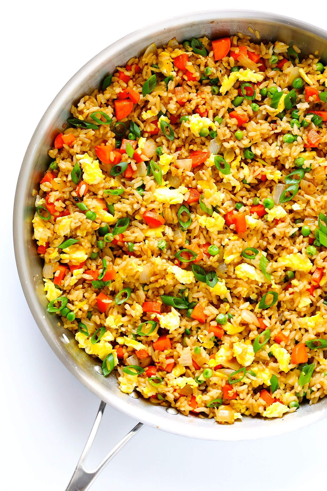

Chinese Fried Rice
Credit:
Fried Rice Recipe
Return to main page

Description:
Fried rice is a traditional Chinese preparation of cooked rice, vegetables, protein, soy sauce, and aromatics. Most days at school, my mom would pack me fried rice for lunch.
The ingredients are stir-fried in a large pan or wok for even flavor distribution. An ideal use for leftovers, fried rice is quick, customizable, and incredibly simple to put together with whatever is in your fridge.
Ingredients:
- Cold Rice - preferably leftover refrigerator rice
- Butter
- Carrots, onions, green onions and peas, or any other leftover veggies
- Toasted sesame oil, oyster sauce, and soy sauce
- Eggs
- Garlic
Steps:
- Scramble eggs: Using a small pat of butter, scramble some eggs in a large sauté pan, breaking them into small pieces as you go. Then transfer the eggs to a separate plate, and set aside.
- Sauté veggies and garlic: Return your sauté pan to the heat, and sauté the onions, carrots, peas and garlic until soft and cooked through.
- Stir fry rice: Then turn the burner to high heat. Scooch the veggies over to one side of the pan, melt the remaining butter in the other half, and add the chilled rice, soy sauce, and oyster sauce (if using). Then stir to combine with the veggies and continue sautéing the rice, stirring every 15-20 seconds or so for 3 minutes, or until you notice the rice and veggies starting to brown slightly.
- Remove pan from heat. And stir in your green onions, sesame oil, and scrambled eggs.
- Taste and season. Give the rice a taste, and season with salt and pepper, plus any extra soy sauce or sesame oil if needed.